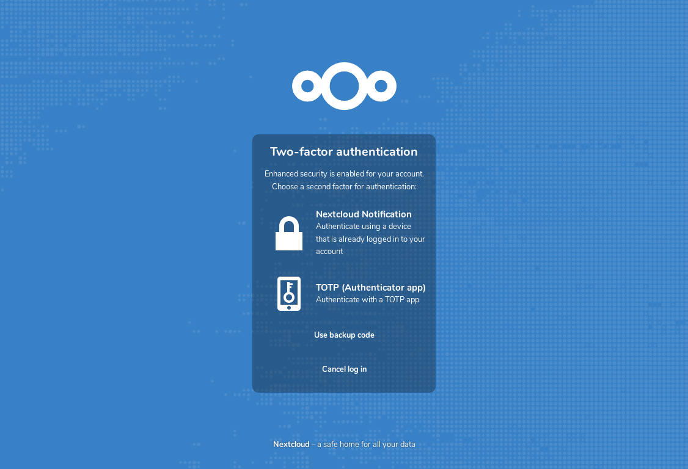

Употреба двофактоске аутентификације
Двофакторска аутентификација (2FA) је начин да се ваш Nextcloud налог заштити од нежељеног приступа. Функционише тако што захтева два различита ’доказа’ вашег индентитета. На пример, нешто што ви познајете (као што је лозинка) и нешто што ви поседујете као што је физички кључ. У већини случајева, први фактор је лозинка коју већ имате, а други може бити текст порука коју примите или кôд који генеришете на свом телефону или на неком другом уређају (нешто што ви поседујете). Nextcloud подржава разне друге факторе, а могу да се додају и други.
Једном када ваш администратор укључи апликацију двофакторске аутентификације, можете да је укључите за ваш налог и да је конфигуришете у Постављање ваших подешавања. Испод можете видети како да то урадите.
Конфигурисање двофактоске аутентификације
У вашим Личним подрешавањима, потражите подешавање Други фактор аутентификације. У овом примеру то је TOTP, кôд заснован на времену који је компатибилан са Google Authenticator апликацијом:

Видећете вашу тајну и QR кôд који може да се скенира TOTP апликацијом на вашем телефону (или неком другом уређају). У зависности од апликације или алата, унесите кôд или скенирајте QR и ваш уређај ће приказати кôд за пријаву који се мења сваких 30 секунди.
Кодови за опоравак у случају да изгубите свој други фактор
Требало би да увек генеришете резервне кодове за 2FA. У случају да се ваш уређај другог фактора украде или престане да ради, моћи ћете да употребите један од тих кодова да откључате свој налог. То у суштини функционише као резервни други фактор. Ако желите да генеришете резервне кодове, идите на своја Лична подешавања и погледајте подешавања за Други фактор аутентификације. Изаберите Генериши резервне кодове:

Приказаће вам се листа једнократних резервних кодова:

Ове кодове ви требало да сместите на неко безбедно место, негде где можете да их пронађете. Немојте да их поставите на заједно са вашим другим фактором, као што је ваш мобилни телефон, већ обезбедите да ако га изгубите, још увек можете да дођете до резервних кодова. Вероватно је најбоље да их чувате у кући.
Пријављивање са двофакторском аутентификацијом
Када се одјавите, па је потребно да се поново пријавите, добићете захтев да унесете TOTP кôд у свој прегледач. Ако поред TOTP укључите још један фактор, видећете екран за избор у којем можете да изаберете методу другог фактора коју желите да користите за ово пријављивање. Изаберите TOTP:

Сада, једноставно унесите свој кôд:

Ако је кôд био исправан, бићете преудмерени на свој Nextcloud налог.
Белешка
Пошто је кôд заснован на времену, важно је да су сатови вашег сервера и паметног телефона скоро употпуости синхронизовани. Разлика у времену од неколико секунди неће правити проблем.
Употреба двофакторске аутентификације са хардверским жетонима
Можете да користите и двофакторску аутентификацију засновану на хардверским жетонима. Познато је да функционишу следећи уређаји:
Базирани на TOTP:
Засновани на FIDO U2F:
Употреба клијенских апликација са двофакторском аутентификацијом
Једном када укључите 2FA, ваши клијенти неће моћи да се повежу употребом лозинке осим ако немају подршку и за двофакторску аутентификацију. Да би се ово решило, требало би да за њих генеришете лозинке специфичне за уређај. За више информација о томе како да то урадите, погледајте Управљање повезаним прегледачима и уређајима .
Имајте на уму
Ако за пријаву на свој Nextcloud користите WebAuthn, обезбедите да не користите исти жетон и за 2FA. То би значило да поново користите само један фактор.